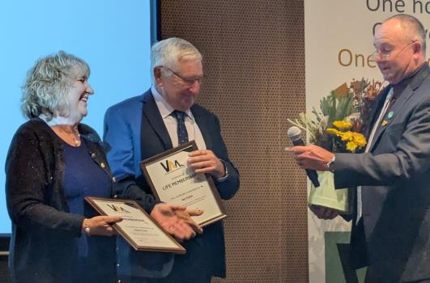

I am proud of what we have achieved together as an association.
I am writing this report shortly after our successful Annual Conference in June. Almost 200 people attended over two days, where we delivered more than 30 presentations covering a wide range of topics across research, biosecurity, commercial beekeeping, education and industry development.
I left the conference feeling incredibly encouraged by the positive energy throughout the event, the commitment of our sponsors and exhibitors to our industry, and the innovation and progress being driven by the scientists, researchers and beekeepers who continue to invest in the future of Australian apiculture.
This year has been one of significant progress. We have continued to strengthen our governance, improve our financial position, expand our industry partnerships and, most importantly, reinforce the Victorian Apiarists' Association's role as the trusted voice and guardian for all things beekeeping in Victoria, bringing together recreational and commercial beekeepers under One Home. One Voice. One Guardian.
None of this happens by accident. It is the result of countless hours contributed by our volunteer board, our branches and subcommittees, affiliate organisations, members and industry partners. On behalf of the Board, I extend my sincere thanks to everyone who has contributed their time, expertise and passion to our association.
One of the true highlights of the Conference was recognising Ian and Robyn Cane with Life Membership of the Victorian Apiarists' Association. Ken Gell's heartfelt presentation honouring two of his lifelong friends was one of those special moments that reminded us what makes our Association so unique. There were few dry eyes in the room. Congratulations Ian and Robyn, and thank you for everything you have contributed to our industry.

As we pass the shortest day of the year, we start to turn our focus towards a new season. We look to an expanding brood nest, a busy pollination season, boggy bush tracks, and maybe the odd swarm cell here or there.
One of the most pleasing developments this year has been the positive culture developing within the Board. We have welcomed three outstanding new board members — Mark, Monré and Stafford — who have already brought fresh ideas, enthusiasm and a strong work ethic to the table. Their contribution has been immediate and reflects the type of culture we continue to build across VAA.
While every organisation has opportunities to improve, I genuinely believe VAA is becoming stronger each year. We remain committed to continuous improvement, open discussion, respectful debate and good governance. Our focus is not on perfection, but on always striving to do better.
Over the past year, we have continued to strengthen our relationships with government, industry and research organisations. Our partnerships with DEECA, Agriculture Victoria, AHBIC, B-Qual Australia and many other stakeholders continue to grow, ensuring Victoria's beekeepers have a respected and influential voice at both the state and national level.
We have also made significant progress in delivering our strategic priorities. From securing major grant funding for industry education and communications to strengthening our governance framework, improving member communications, and developing new initiatives around public land access and biosecurity, the VAA Board has remained focused on building an association that is well positioned for the future.
Looking ahead, I see the next twelve months as a period of continued refinement and growth.
One of my personal priorities is to continue improving the way our Board operates. Strong governance isn't achieved through one decision or one meeting. It is built through continuous improvement, accountability, transparency and respectful collaboration. I want every board member to feel empowered to contribute, challenge ideas constructively and work together in the best interests of our members.
Equally important is strengthening our connection with our branches and affiliated associations across Victoria. Our branches and affiliates are the heartbeat of VAA. They are where members connect, where knowledge is shared and where VAA delivers real value at the local level.
As the state body, it is our responsibility to support, engage with and strengthen those relationships. We want every branch and affiliate to feel connected to the Board, supported in their work and recognised as an important part of VAA.
Building stronger two-way communication and col… (Continued on page 6)